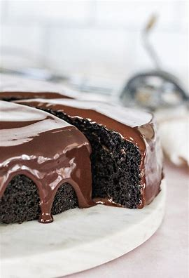

Recette du gâteau au chocolat
Retour à la page principale

Description
Vous voulez manger un gâteau mais n'êtes ni doués en idées ni en cuisine ?
Le bon vieux gâteau au chocolat est parfait pour vous.
La recette qui suit a été perfectionné pendant plusieurs générations depuis mon arrière
arrière grand-mère Bertha.
Ingrédients
- 200g de chocolat noir
- 100g de beurre
- 50g de farine
- 3 oeufs
- 60g de sucre
Etapes
- Préchauffer le four à 180°C
- Découper le chocolat en carré et faire des morceaux avec le beurre
- Faire fondre le chocolat et le beurre à feu doux en mélangeant
- Dans un saladier, mélanger les oeufs avec le sucre
- Ajouter la farine et bien mélanger
- Ajouter le chocolat et bien mélanger
- Mettre dans un moule et faire cuire environ 20 minutes à 180°C